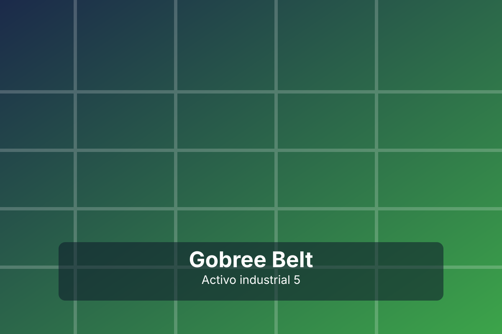

Calidad
Excelencia en cada solución.
Somos especialistas en bandas transportadoras industriales con enfoque en confiabilidad, productividad y seguridad operativa.
Impulsar la competitividad industrial de nuestros clientes con soluciones técnicas de transmisión y transporte que reduzcan paros y aumenten el rendimiento de sus líneas.

Excelencia en cada solución.
Respuesta ágil y orientada al cliente.
Mejora continua para procesos industriales modernos.